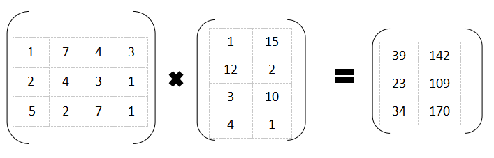

Înmulţirea matricilor este o operaţie des utilizată în practică la matematică. Astfel, aceasta se poate facilita prin conceperea unui algoritm care să execute înmulţirea a două matrici.
Trebuie avut în vedere că aceasta nu este comutativă şi totodată faptul că trebuie respectate nişte condiţii:Numărul de coloane din prima matrice trebuie să fie egal cu numărul de linii din a doua matrice, astfel obţinându-se o matrice ce are numărul de linii egal cu cel al primei matrici şi numărul de coloane egal cu cel al celei de-a doua matrici.
Exemplu:
Dacă matricea A are m linii şi n coloane, iar matricea B are n linii şi p coloane, atunci matricea rezultantă C va avea m linii şi p coloane.
Presupunem că matricea A are 3 linii şi 4 coloane, iar matricea B are 4 linii şi 2 coloane, vom obţine C de 3 linii şi 2 coloane.
